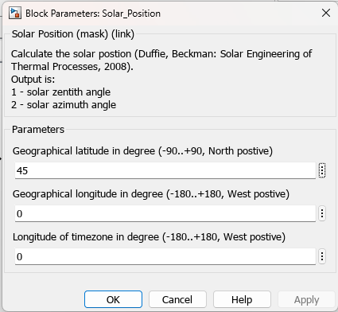

Solar_Position
Path: CARNOT/Basic/Weather_and_Sun
Purpose:
Calculates the position of the sun according to the simulation time.
Description:
The sun position is calculated in the S-function "sunpos".
The function was compared with TRNSYS radiation processor (Type 16) and
showed good congruence. The sun position is regularily checked by files
like meteonormminute2wformat and no difference is found (see
verify_solarposition.m).
Output:
| Out1 | : | Solar position vector (zenith angle, azimuth angle in °) |
Parameters and Dialog Box:

Examples:
Open the example explorer from the Matlab command window
ExampleBrowser
or load the examples via the CARNOT library.
Literature:
Duffie, J., Beckman, W.:Solar Engineering of thermal processes, John Wiley &
Sons, Inc. 2006
Deutscher-Wetter-Dienst: Formeln für den Sonnenstand, 1990
Reindl, Beckman, Duffie: Diffuse Fraction Correlations, Solar Energy, 45, 1, 1990
Characteristics:
| Direct Feedthrough | : | No |
| Sample Time | : | Inherited |
| Vectorized | : | No |